Гонгконг (Hongkong)
До Гонконга можно довольно быстро и просто добраться из Шэньженя. Метро, таможня — привет, китайский Нью-Йорк!
Да, наконец-то мы оказались в городе, который богат не только в материальном плане, но и в плане многочисленных уникальных фактов и мифов вокруг него.
Крышесносные небоскребы, квартиры-коробки, межнациональная солянка и многое другое. Вот он — Гонконг!
На деле оказалось не совсем так.
Уже прибыв в Гонконг, мы обратили внимание на людей, которые выглядели любопытно: они совершенно не были похожими на тех китайцев, с которыми мы жили полгода. Да и среди них было заметно большое количество людей других национальностей. Не всегда даже было понятно, каких именно.
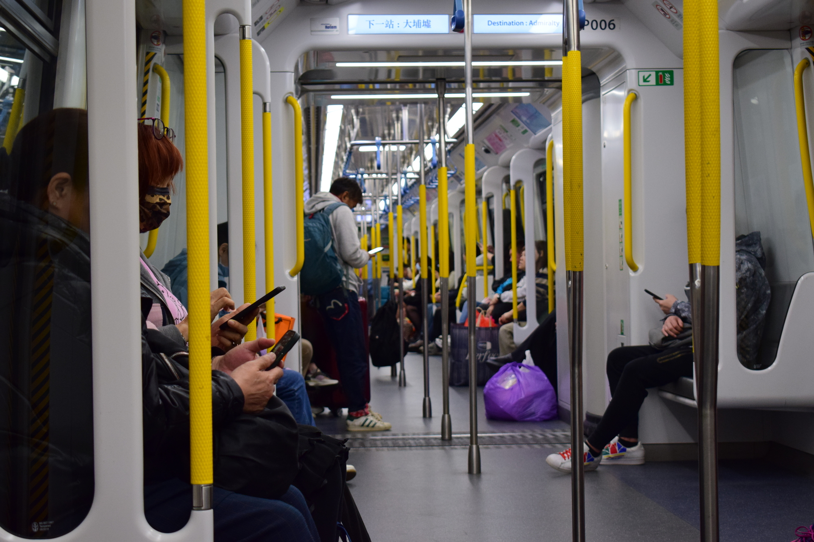

Любопытно, как менялось наше отношение к такой мультинациональности.

Оказавшись в таком разнообразии культур, испытываешь энтузиазм.
Хотя инстинкт самосохранения его перекрывает, когда вдруг из темного вонючего закоулка на тебя выходит малоопрятный мужчина в обносках.
Хотя некоторые его соотечественники, деловые ходят по центральным улицам в дорогих пиджачках, на ходу попивая кофе.
(фото центра)
На улицах и обеспеченные, и ультра-богатые, и ультра-бедные.
И туристы-европейцы.
И туристы, раскрывающие рты от местных цен.
Местные китайцы уникальны. Что уж говорить, если и язык, на котором они говорят, непонятен носителям северного диалекта - наиболее популярного и распространенного в самом Китае и во всем мире (его мы и учим). Локальный диалект - кантонский. Да, этот тот случай когда даже изучая китайский не можешь понять ни фразы. Иероглифы тоже выглядят по-другому (фото)
Чтобы прояснить ситуацию, стоит остановиться на истории города. А у Гонконга она довольно интересная и непростая.
Формальная нынешная система позволяет Гонконгу вести в какой-то мере самостоятельно внутреннюю политику, внешней политикой руководит материковый Китай. То есть “одна страна, две системы”. Однако в 2047 году Гонконг уже офциально станет частью Китая. Но а пока что это абсолютно самобытный город.
Архитектура, инфраструктура, местные люди — все совершенно не похоже на Китай.

По приезде в Гонконг заметным становится старомодная и местами пошарпанная архитектура.
Впрочем, интересно, каково влияние Китая на наше впечатление от города, поскольку мы привыкли к повсеместным электромобилям, футуристичным небоскребам, построенным словно только вчера.
В Гонконге же думаешь, что попал в прошлое, даже несмотря на обилие высоток.

А вот и местное такси.
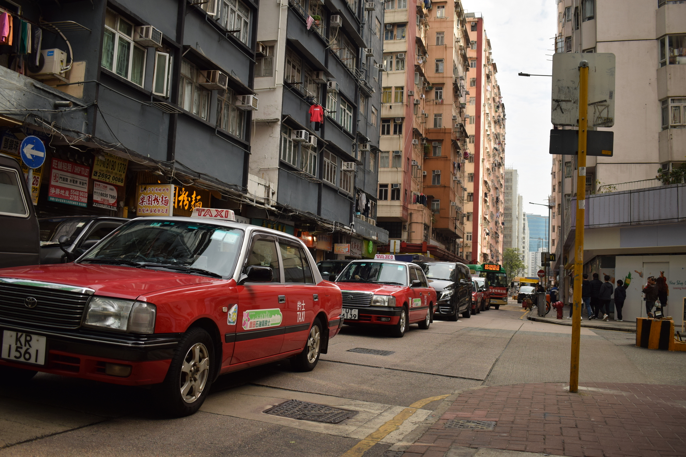
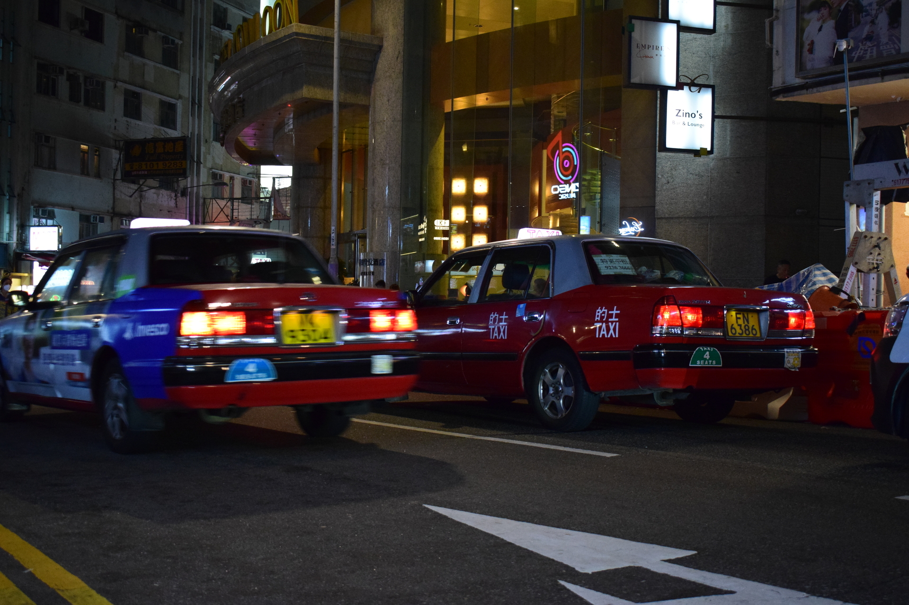
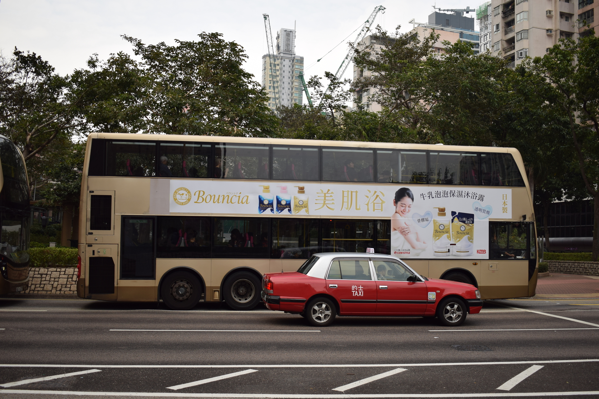
Интересно, что на таких машинах часто указана максимальная вместимость пассажиров.


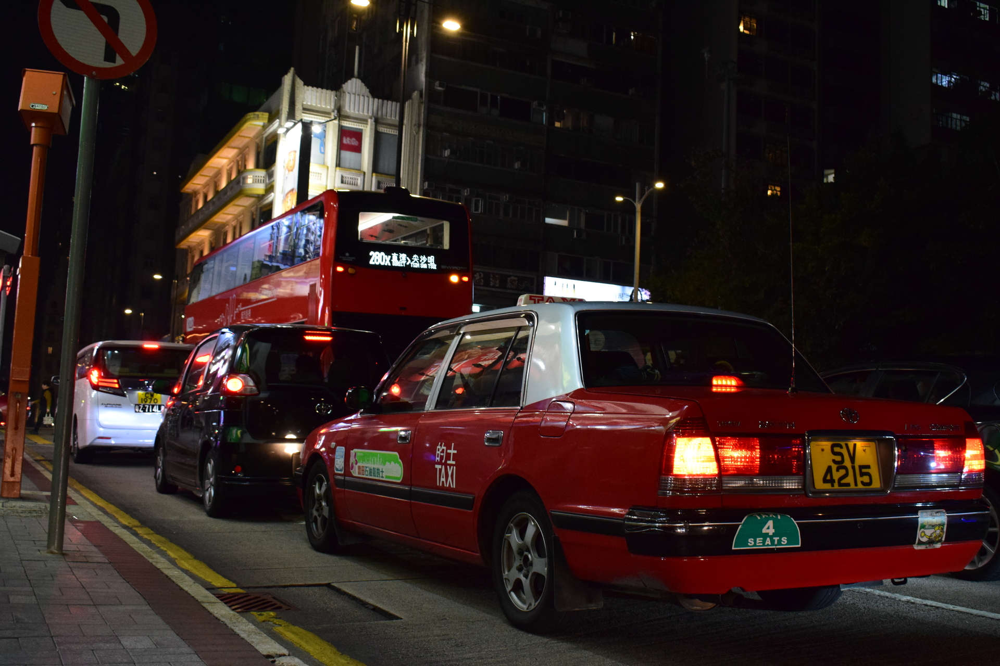
Сетевые компании типа Uber вот так маскируют маркировки брендов. (На двери не видно, надо уточнить)
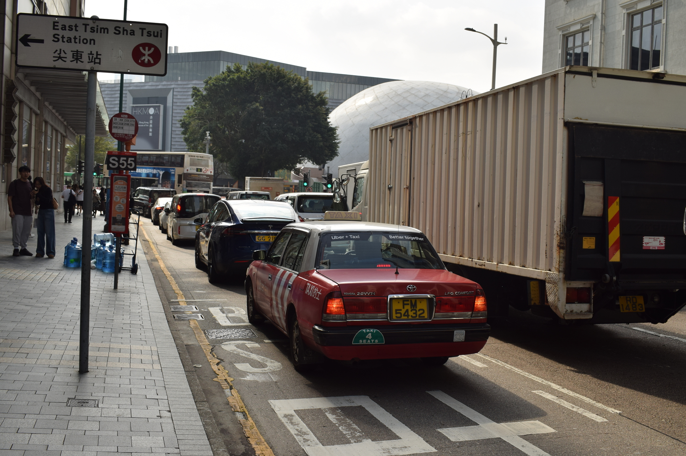
Гонконг известен как город-муравейник, в котором проживает 7.5 миллионов человек. Плотность населения ~7000 человек на квадратный километр.
Отель снимали вот в таком вот особняке (Chungking mansions).
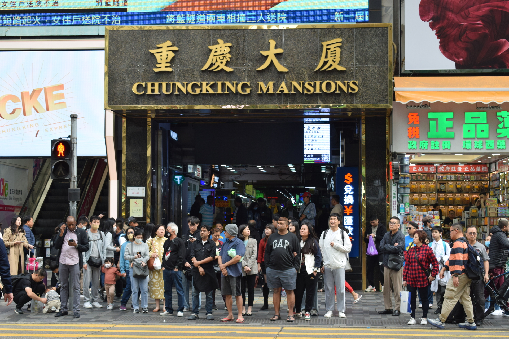
Конура.
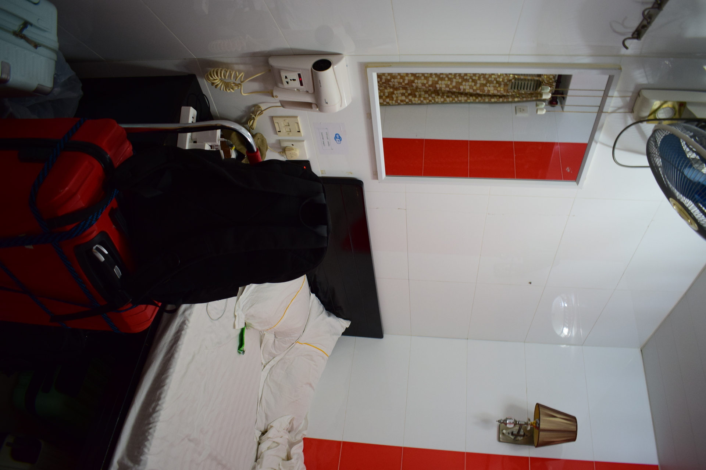
Зато с приватным санузлом.
Небоскрёбы
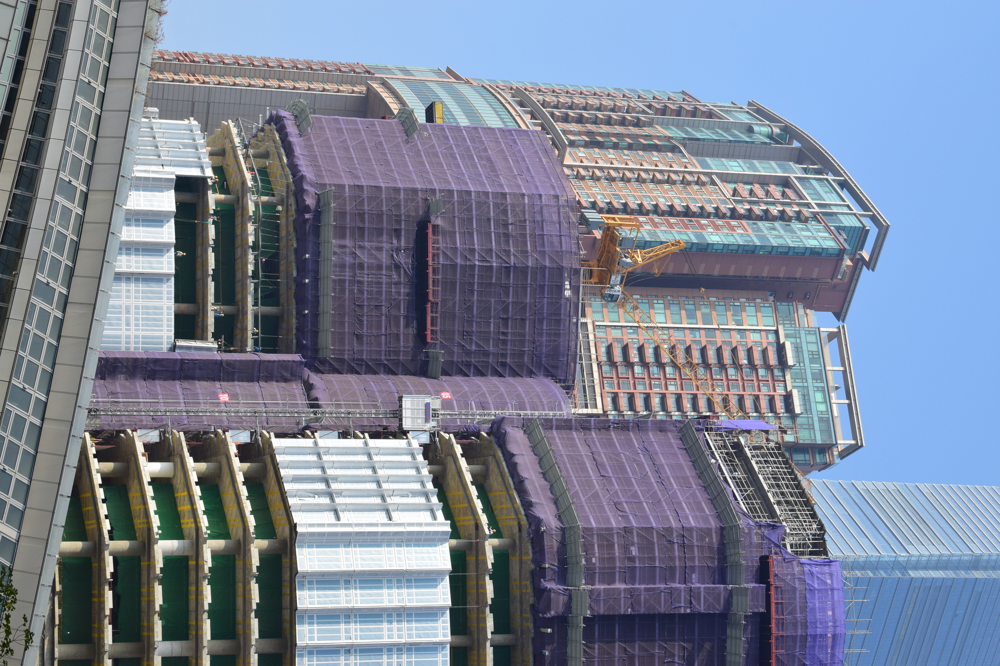
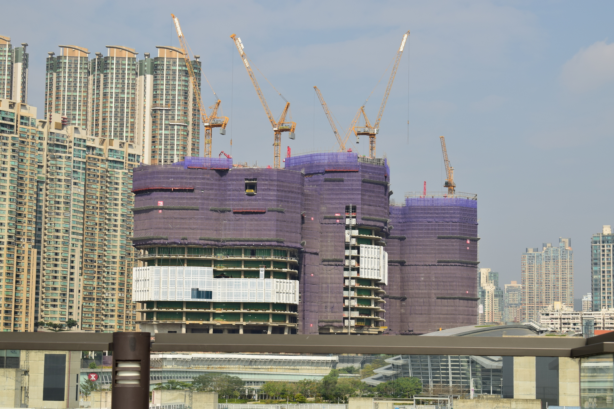


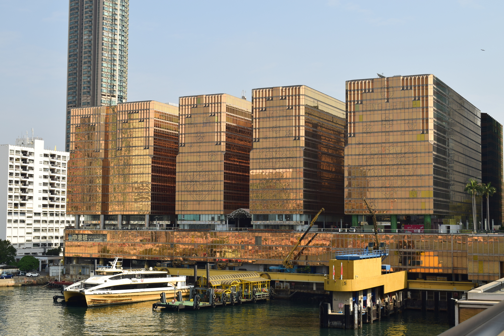

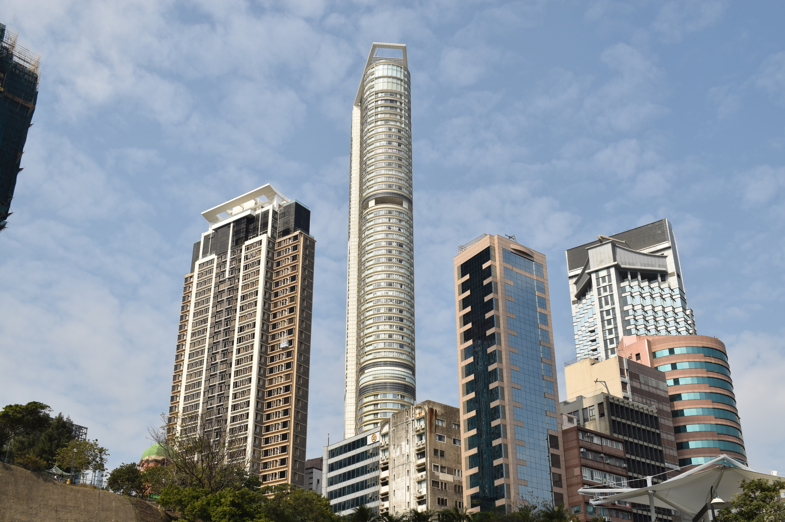
Кстати, строительные леса в Гонконге делают из бамбука.


Автобусы


Отойдя от центра несколько километров, можно увидеть такие картины. Разноцветные коробки, да муравейники
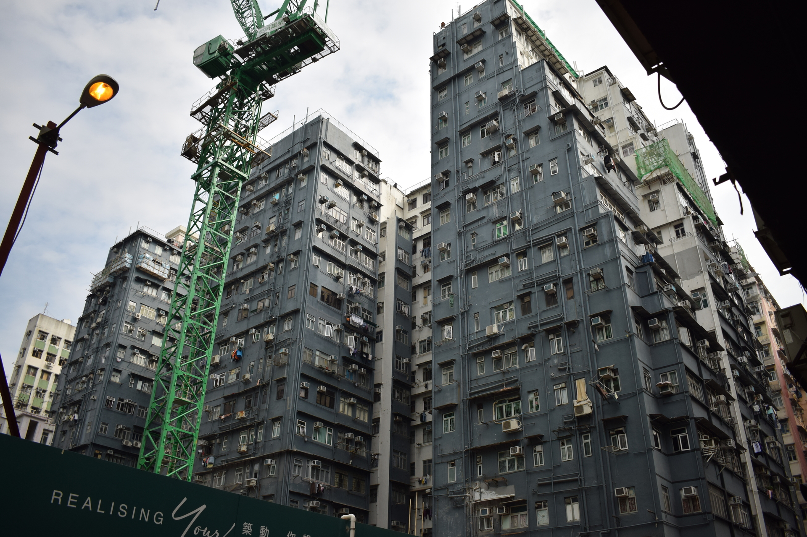

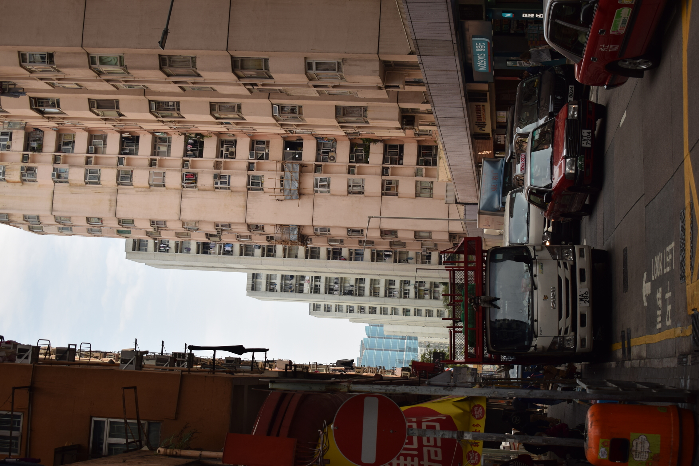